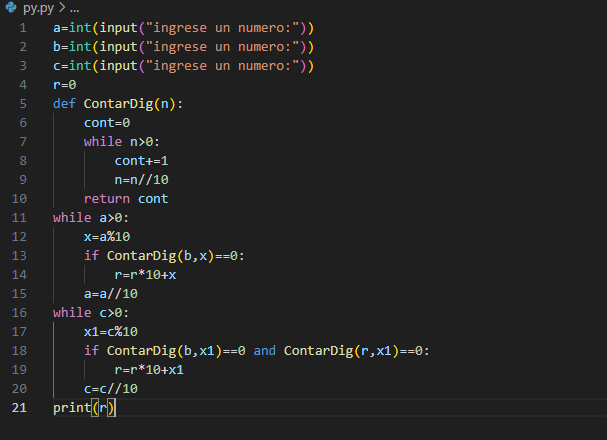

Programación
Cuento con varios programas realizados por mi, los cuales apesar de ser sencillos, los publico y comparto con los demás. Mi objetivo es que personas que tengan alguna duda puedan guiarse en base a mis programas y puedan aprender algo de ellos. Los programas que tengo estan hechos tanto en Python como en Pseint, tengo tanto codigos como pseudocodigos. Aprendi a manejar diagramas de flujo asi que esa es mi manera de pasarle mi codigo a otras personas ya que no todos usamos el mismo lenguaje de programacion y con ver mi logica ya pueden encontrar la solucion a la duda que hayan tenido. De todos modos siempre trato de aclarar que me gusta trabajar con funciones y tambien las hago publicas para que puedan comprender mi logica.
